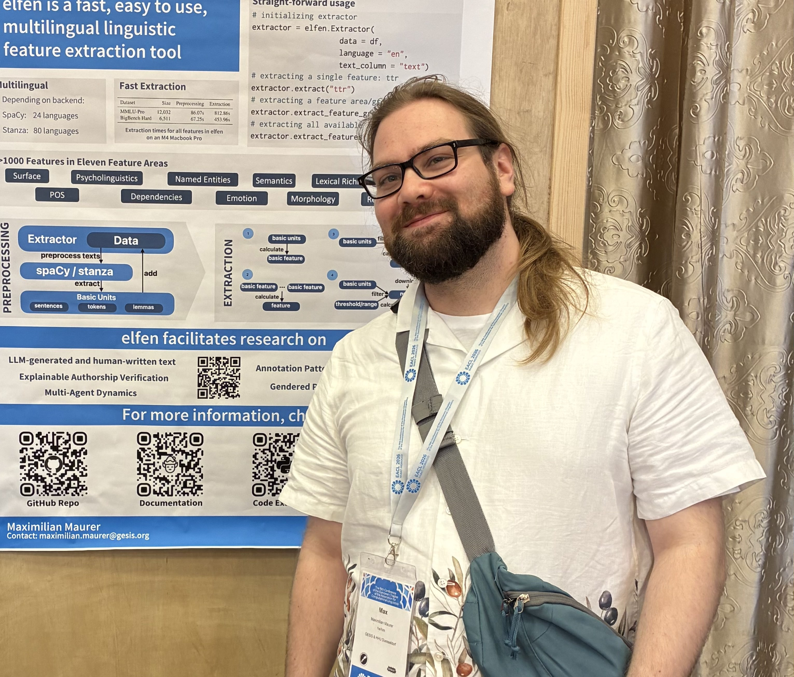

About

I'm a third year PhD student in the Data Science Methods team in the Computational Social Science department at GESIS - Leibniz Institute for the Social Sciences in Cologne, Germany, and at Heinrich Heine University Düsseldorf.
On the one hand, my research interests include linguistic and annotator factors of (dis)agreement in text annotation and downstream effects on model behavior, in particular for subjective phenomena. In this context, with colleagues, we investigated the role of linguistic features in personalized argument retrieval (see Maurer et al., 2024), and discussed the effects of group-level annotation behavior on group transfer performance ceilings for argument quality prediction (see the pilot study in Romberg et al., 2025).
On the other hand, (somewhat by accident) became interested in questions related to synthetic text generated by large language models (LLMs). Work on this includes linguistic makeup and detectability of such texts (see Dönmez, Maurer et al., 2025, where we analyzed linguistic features in human-written and LLM-generated counterarguments). We also discussed questions and pitfalls of representation and representativeness of LLM-generated texts for simulating people's opinions (see Lassen, Maurer and Melis, 2025).
To facilitate large-scale analyses using interpretable linguistic features, I developed a package called elfen (the German word for Santas little helpers 🧝) to extract them efficiently for large text datasets. For more information, check out the GitHub repository and the documentation.
If you want to chat or would like to collaborate, feel free to reach out via email.
Publications
AI Argues Differently: Distinct Argumentative and Linguistic Patterns of LLMs in Persuasive Contexts
Towards a Perspectivist Turn in Argument Quality Assessment
GESIS-DSM at PerspectiveArg2024: A Matter of Style? Socio-Cultural Differences in Argumentation
Toeing the Party Line: Election Manifestos as a Key to Understand Political Discourse on Twitter
Classifying Noun Compounds for Present-Day Compositionality: Contributions of Diachronic Frequency and Productivity Patterns
Contact
Email: maximilian.maurer@gesis.org